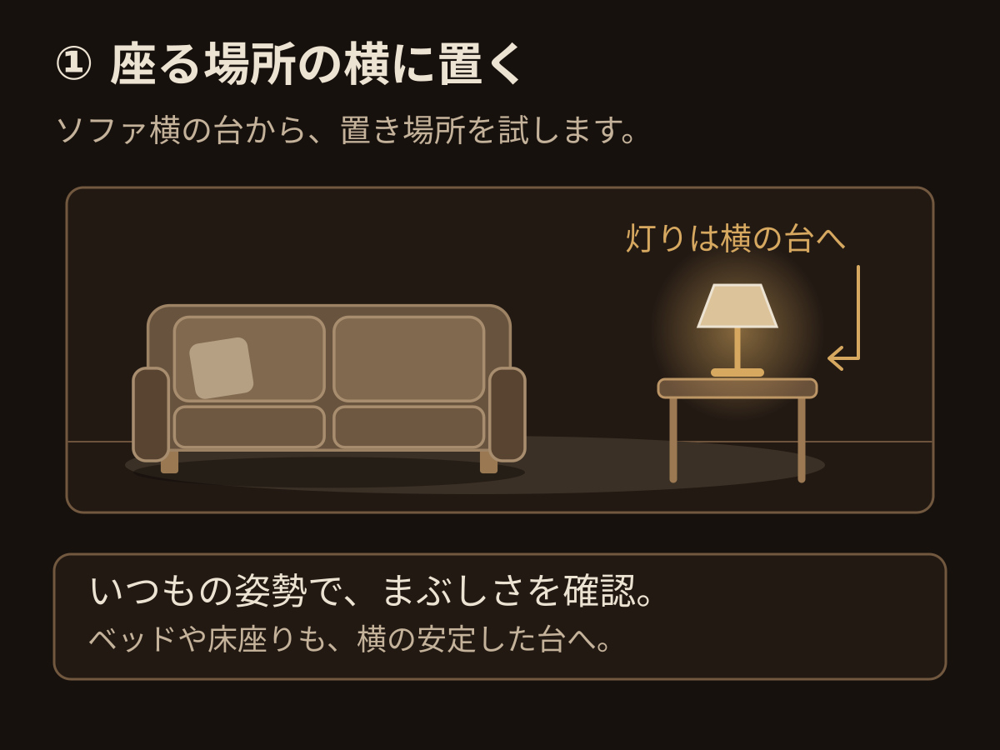
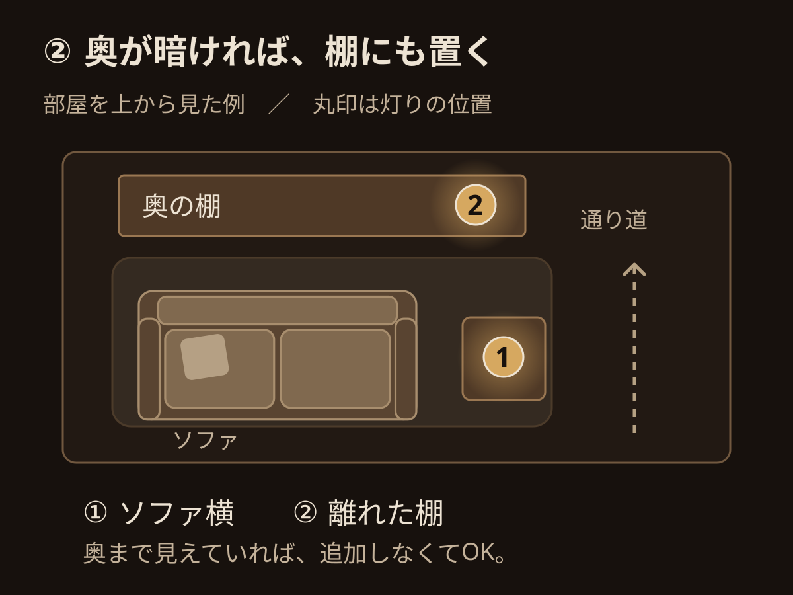
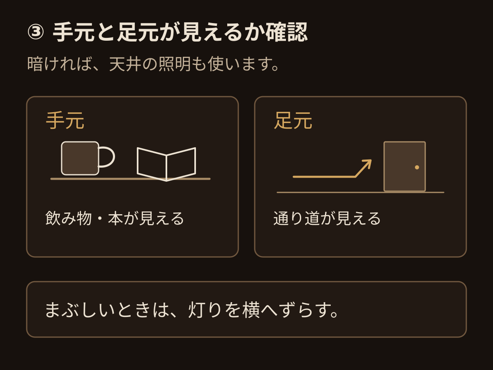
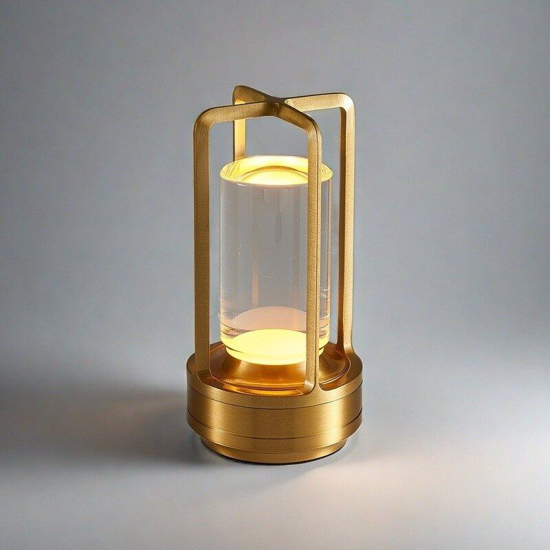
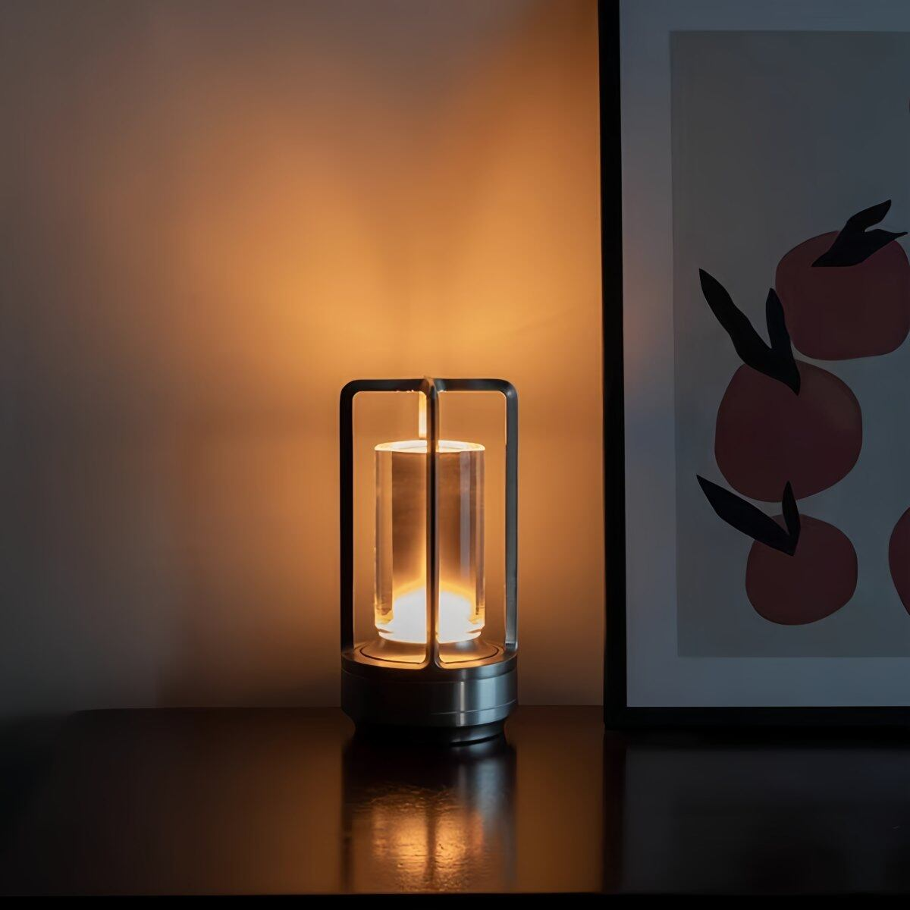
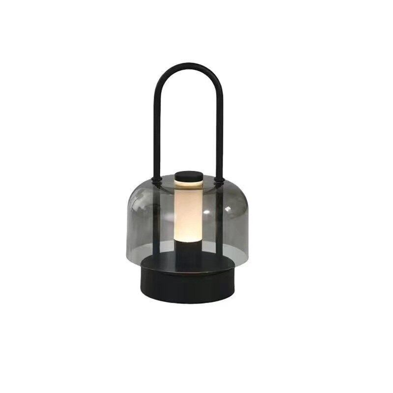
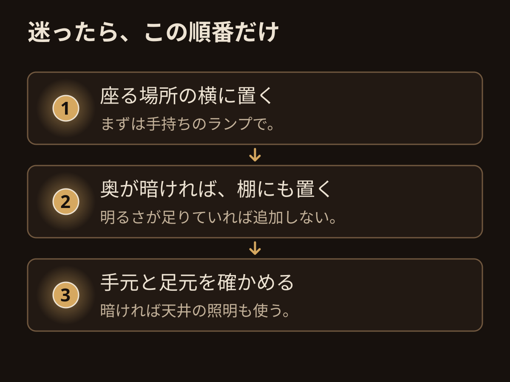

灯りの置き場所に迷ったら、まずは「いつも座る場所の横」です。 奥が暗ければ離れた棚にも灯りを置き、最後に手元と足元が見えるかを確かめます。 大きな家具を買い替えず、手持ちのランプから試せます。
仕事から帰って、自分の部屋でゆっくり過ごしたい。けれど、どこに何を置けばいいか分からない。そんなときは、部屋全体を飾ろうとせず、いつも座る一角から始めてみてください。
間接照明とは、壁や天井に光を当て、反射した光で照らす方法です。 テーブルランプは「台に置く照明器具」のことで、すべてが間接照明になるわけではありません。この記事では、置き型の灯りを使い、壁と手元の見え方を整える手順を紹介します。参考：日本照明工業会
① まず、座る場所の横に置く
最初に試すのは、ソファやベッドの横にある安定した台です。 立ったまま決めず、いつもの姿勢で座って、まぶしくないかを確かめます。

| くつろぐ場所 | 灯りを置く場所 |
|---|---|
| ソファ | 横のサイドテーブル |
| ベッド | 枕元の横の棚や台 |
| 床のクッション | 横の低いテーブル |
- 台はぐらつかず、ランプの底がはみ出さないものを選ぶ。
- まぶしければ、顔の正面から横へずらす。それでも気になるなら、別の台で高さを変える。
- 飲み物を取るときや、立ち上がるときにぶつからないか確かめる。
高さは一律に決めなくて大丈夫です。電球やLEDなどの「光を出す部分」が目に入り続けない位置を探してください。本や箱を重ねて不安定な台を作ったり、布で灯りを覆ったりせず、器具の説明書に沿って使います。
② 奥が暗ければ、離れた棚にも置く
座る場所の横だけでは部屋の奥が暗いときに、もうひとつ足します。 奥まで見えて過ごしやすければ、無理に増やす必要はありません。

- 座る場所から見て、奥か斜め前の棚を選ぶ。
- 棚の物を動かして、ランプを安定して置ける面を空ける。
- 点けたら座り直し、壁の見え方とまぶしさを確かめる。
横の台と奥の棚で、高さを変える配置も試せます。ただし、見栄えよりもまぶしくないことを優先してください。カーテンなどから離す距離は、説明書の指定に従います。
棚がなければ、机やテレビ台の空いた端も候補です。置ける場所がなければ買い足さず、天井の照明を組み合わせましょう。通り道に器具やコードを出さないことも大切です。
③ 手元と足元が見えるか確かめる
最後に確かめるのは、落ち着いて過ごせることと、必要なものが見えることです。 天井の照明を消すことがゴールではありません。

- 手元：飲み物の位置やテーブルの端が分かる。本を読むなら、文字を無理なく追える。
- 足元：床の物や段差が見え、玄関やスイッチまで歩ける。
- まぶしさ：座っても横になっても、光が気にならない。
暗ければ、手元用の灯りや天井の照明を使います。明るさを変える「調光」ができる器具なら、必要な明るさへ調整してください。生活の場面に合わせて灯りを分ける考え方は、日本照明工業会も紹介しています。参考：住宅照明設計のポイント
暖かな色合いにしたい場合は、赤みがかった光の「電球色」が選択肢です。好みには個人差があるので、光の色は実物や仕様で確かめましょう。写真だけで色や明るさを決めないことがポイントです。
置く場所が決まったら、ランプを選ぶ
買い足すのは、手持ちの灯りで足りない部分が分かってからで十分です。 次の項目を確認して、使う場所に合うものを選びます。

トルヴ テーブルランプ
ルーナ キャンドルホルダー
エーク テーブルランプ〈取手あり〉- 大きさ：台の上に安定して置けるか。
- 光：欲しい色か。明るさを変える機能は必要か。
- 電源：コンセント・電池・充電のどれか。充電式なら、説明書どおりに充電できる場所も確保できるか。
トルヴ テーブルランプ：座る場所の横で、置き場所を試したいときに。約 幅9×高さ17.5cm、充電式のコードレスです。ショップで見る
ルーナ キャンドルホルダー：コードを引きにくい棚の上に。商品名はキャンドルホルダーですが、充電式のLEDの灯りです。ショップで見る
エーク テーブルランプ〈取手あり〉：家具や小物に合わせて本体の色を選びたいときに。ブラック・ホワイト・カッパーから選べます。調光機能はありません。ショップで見る
全部をそろえる必要はありません。HYGGE TOKYOが提案するのは、大きな家具を買い替えず、灯り・香り・小物で部屋を整えること。まず今夜、手持ちの灯りを座る場所の横へ動かしてみてください。
よくある質問
迷ったら「横に置く → 奥を見る → 手元と足元を確認」の順に戻りましょう。 台数や高さの正解を探すより、自分の部屋で試すと決めやすくなります。

ワンルームの間接照明はどこに置く？
置き型の灯りなら、まず座る場所の横の台に置いて試します。奥が暗ければ、離れた棚にも置き、壁への光の届き方を確かめてください。
間接照明だけでは暗いときはどうする？
手元が暗ければ手元用の灯りを、部屋全体や足元が暗ければ天井の照明を足します。くつろぐときも、読書や移動に必要な明るさは残してください。
ワンルームに間接照明を置く棚がないときは？
机やベッドサイドの台など、手持ちの安定した家具から探します。安全に置ける場所がなければ、無理に増やす必要はありません。
間接照明とテーブルランプの違いは？
間接照明は壁や天井で光を反射させる照らし方、テーブルランプは台に置く照明器具です。ランプを置くだけで間接照明になるとは限らないため、光がどこへ届くかを見て使います。